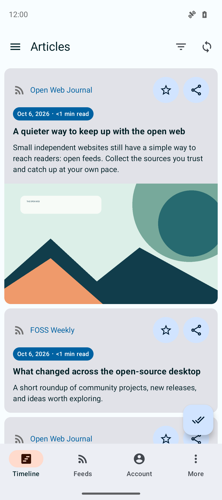
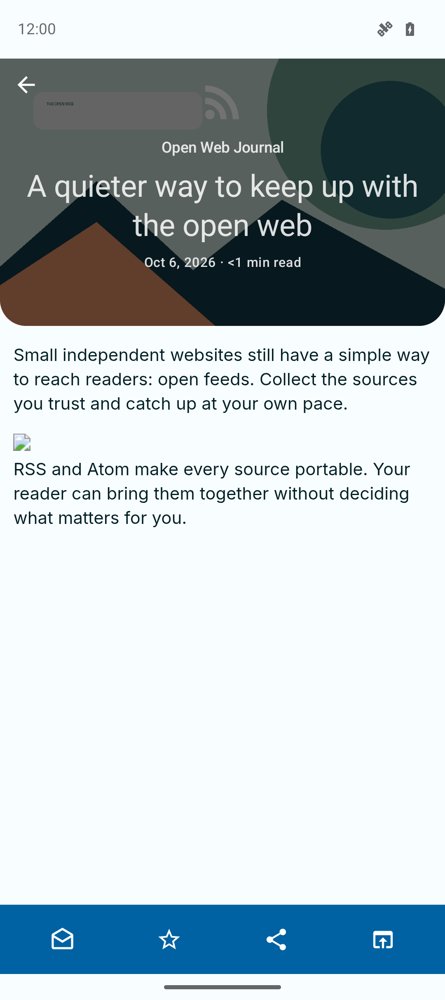
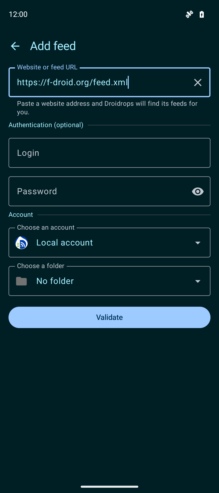
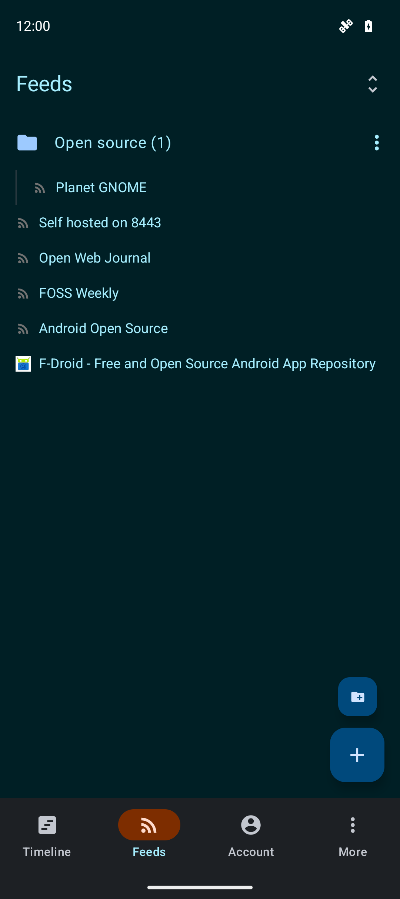
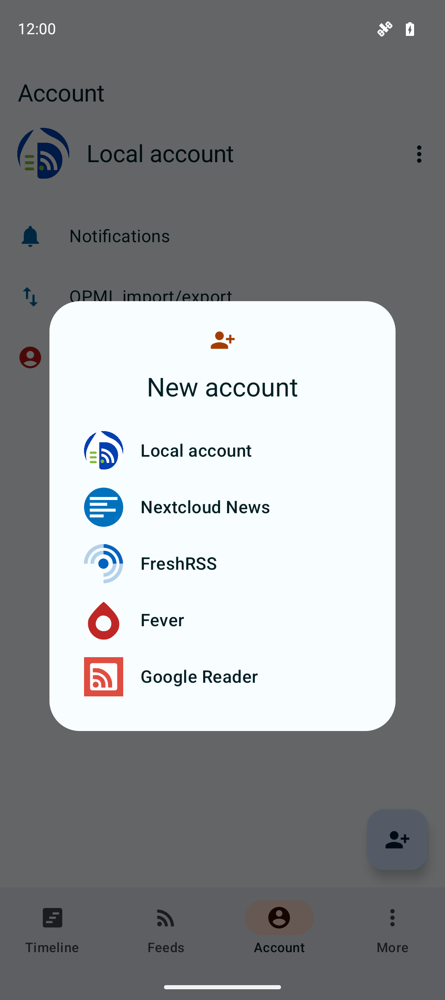
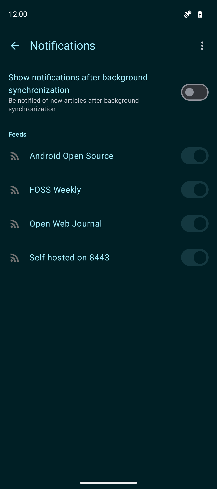
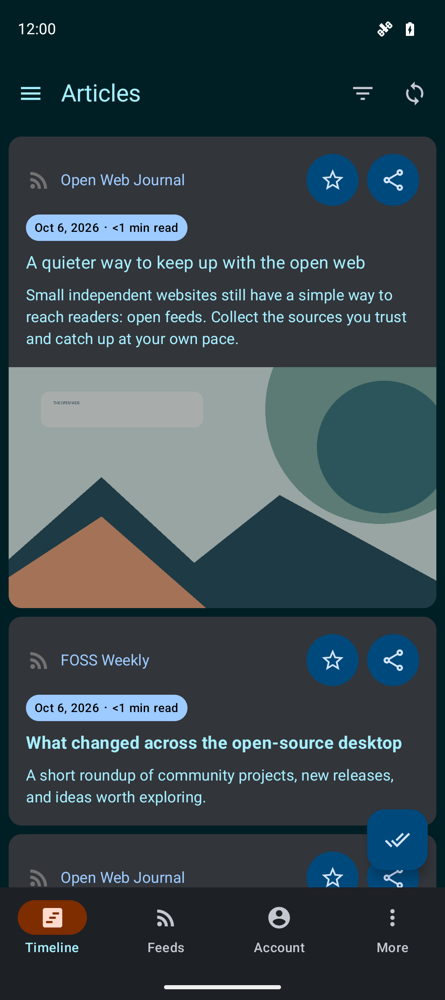
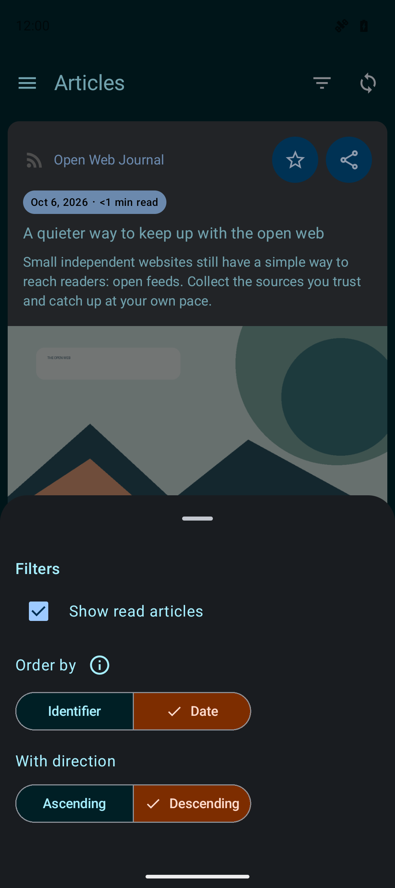
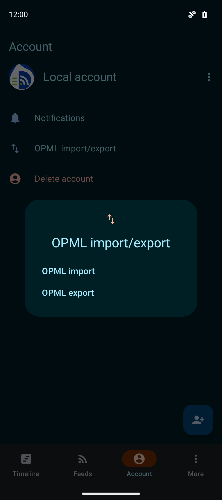

01 · Timeline
One place to catch up.
Scan recent articles from all your feeds. Reading times make it easy to choose what fits the moment, including stories under a minute.
- Recent articles
- Reading time
- Save favourites
An open-source reader for Android
Bring RSS and Atom feeds together with the reading services you already use. Catch up in one timeline, save the good reads, and keep your library in your hands.

A closer look
See how Droidrops brings your feeds, services, and everyday reading together.
01 · Timeline
Scan recent articles from all your feeds. Reading times make it easy to choose what fits the moment, including stories under a minute.

02 · Reader
Open an article in a focused reading view with its source, headline, image, and estimated time together.

03 · Add a feed
Paste a website or feed URL and let Droidrops look for a feed you can follow.

04 · Feeds and folders
Group feeds in folders and browse the sources you follow from their own list.

05 · Accounts and sync
Use local feeds on your device or connect FreshRSS, Nextcloud News, the Fever API, or a Google Reader API compatible server. Droidrops syncs subscriptions and reading status through services that support them.

06 · Notifications
Turn on notifications after background sync, then choose the feeds that should send them.

07 · Light and dark themes
Switch between light, dark, or your system theme in the app. The website follows your device theme too, and its theme button lets you choose.

08 · Filters
Filter read articles and change the sort order to keep your current reading list easy to navigate.

09 · Move your feed list
Import an OPML file from another reader or export your current subscriptions when you move.
Privacy and data
Local account data stays on your device. When you connect a reading service, Droidrops communicates with that service to sync your subscriptions and articles. Read the full policy for details.